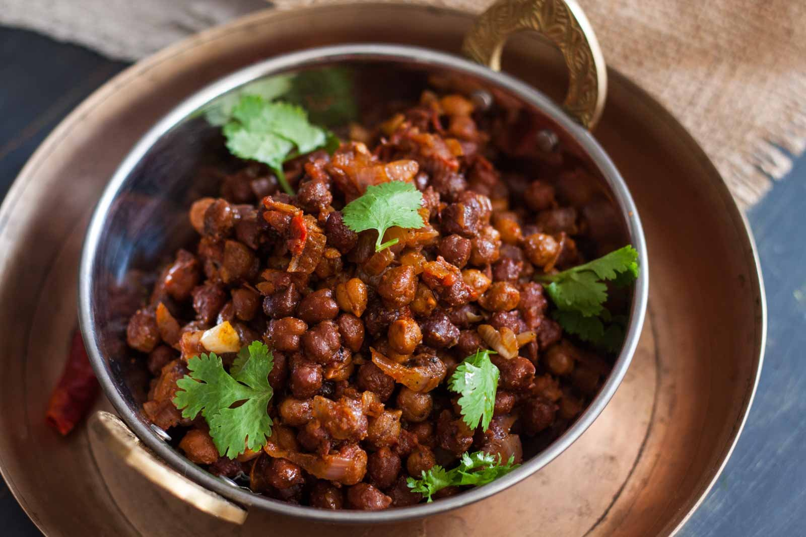
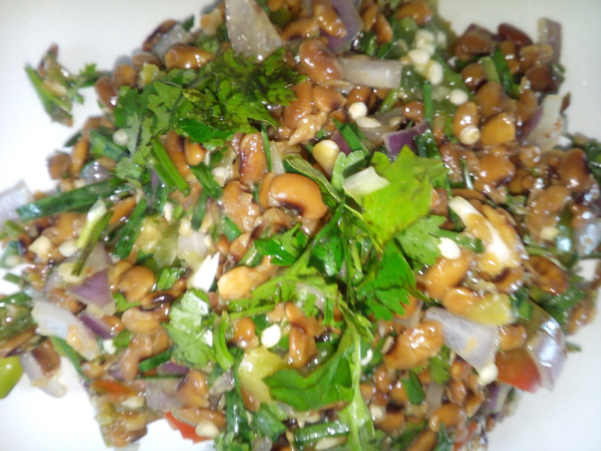

FOOD VARIETIES
Staple Dishes of Manipur 🍽️

Eromba – A mashed dish of boiled vegetables and fermented fish (Ngari).
Chamthong (Kangsoi) – A light stew with seasonal vegetables and herbs.
.jpg)
Ooti – A delicious curry made with peas and bamboo shoots.
Kanghou – A dry stir-fry of vegetables or meat with local spices.


Nga Ataoba – Fried or roasted fish served with herbs and spices.
🍲 Rice & Meat Dishes

Chak-hao Kheer – A sweet pudding made from black rice.
Bora (Pakora) – Deep-fried fritters made from vegetables or pulses.

Singju – A spicy and crunchy salad made with raw vegetables, herbs, and fermented fish.
Yongchak Singju – A special salad made from stink beans and herbs.

🥗 Fermented & Unique Foods

Hawaijar – Fermented soybeans used as a protein-rich ingredient.
Soibum – Fermented bamboo shoots, used in stews and curries.


Ngari – Fermented fish, a key ingredient in many Manipuri dishes.
Aloo Kangmet – Mashed potatoes mixed with mustard oil and chili.
Peruk Kangsu – A dish made with pennywort leaves and spices.